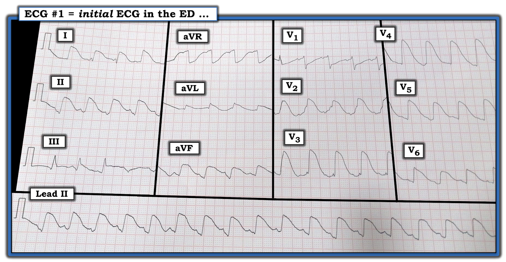
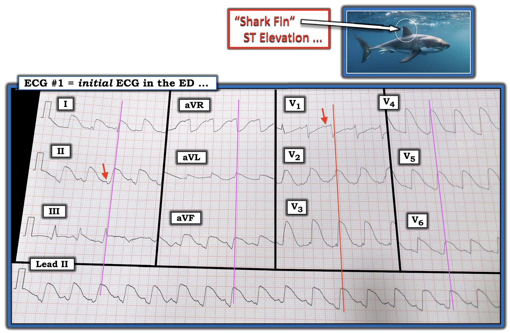
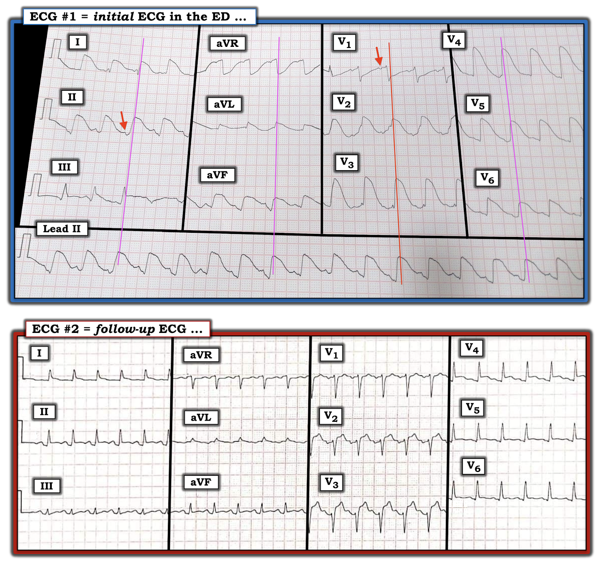

ECG Blog #265 (73) — VT hay là điều gì khác?
Bệnh nhân có điện tâm đồ trong Hình-1 nhập viện vì ngộ độc carbon monoxide (CO). Máy tính đọc nhịp trên bản ghi này là VT (nhịp nhanh thất – Ventricular Tachycardia).
CÂU HỎI:
- Bạn có đồng ý với kết quả đọc bằng máy tính (computerized interpretation) không?
- Nếu không — BẠN sẽ đọc điện tâm đồ trong Hình-1 như thế nào?


=======================================
LƯU Ý: Đến đây, một số bạn đọc có thể muốn nghe ECG Audio PEARL dài 5:40 phút trước khi đọc Suy nghĩ của tôi về điện tâm đồ trong Hình-1. Bạn có thể xem Suy nghĩ của tôi về các bản ghi này bất cứ lúc nào (nằm bên dưới ECG MP-73).
=======================================

ECG Media PEARL #73 (5:40 phút Audio) hôm nay — Ôn lại khái niệm ST "vây cá mập" (Shark Fin) chênh lên và chênh xuống như một dấu hiệu của nhồi máu cấp diện rộng.
Cách tiếp cận CỦA TÔI với điện tâm đồ trong Hình-1:
Như thường lệ — tôi ưu tiên một Cách tiếp cận hệ thống (Systematic Approach) để đọc mọi điện tâm đồ mà tôi gặp (Cách tiếp cận hệ thống này được ôn lại trong ECG Blog 205).
- Tần số & Nhịp: Kết quả đọc nhịp bằng máy tính là sai. Đây không phải là VT. Thay vào đó, cơ chế của nhịp là xoang — được xác định nhờ có các sóng P dương đều đặn ở chuyển đạo II (theo mũi tên ĐỎ ở chuyển đạo II trong Hình-2). Sóng P xoang cũng thấy được ở chuyển đạo V1 (mũi tên ĐỎ ở chuyển đạo này trong Hình-2) — cũng như ở một số chuyển đạo khác. Nhìn chung, các phức bộ QRS đều với tần số ~110/phút — do đó nhịp là nhịp nhanh xoang.
- Các khoảng: Điểm giảng dạy chính của bản ghi này nằm ở việc đánh giá thời gian QRS. Ban đầu tôi nghĩ phức bộ QRS rộng. Khi xem kỹ hơn — tôi nhận ra rằng QRS không rộng — mà thay vào đó là ST chênh lên "vây cá mập" (Shark Fin) ở nhiều chuyển đạo, khiến QRS trông như rộng!


Hình thái Vây cá mập (Shark Fin) là gì?
Điều quan trọng là cần biết hình ảnh đoạn ST chênh lên "vây cá mập" — trong đó phức bộ QRS trông rộng vì nó hòa lẫn vào các đoạn ST chênh lên cực độ ở nhiều chuyển đạo. Hậu quả là — ranh giới giữa điểm kết thúc phức bộ QRS và đoạn ST trở nên không phân biệt được ở những chuyển đạo có ST chênh lên hoặc chênh xuống rõ.
- Như đã bàn chi tiết trong Pearl (ở trên) Audio hôm nay — đoạn ST chênh lên "vây cá mập" thường nhất là dấu hiệu của thiếu máu cục bộ xuyên thành nặng do tắc mạch vành cấp. Cần cân nhắc thông tim sớm để làm rõ giải phẫu — vì trong nhiều (phần lớn) trường hợp, tiên lượng nhiều khả năng xấu trừ khi được tái tưới máu kịp thời.
- MẤU CHỐT để khẳng định rằng hình thái "vây cá mập" là nguyên nhân của bức tranh điện tâm đồ nổi bật mà nó tạo ra — là tìm 1 hoặc 2 chuyển đạo mà ở đó bạn có thể xác định rõ giới hạn (điểm kết thúc) của phức bộ QRS. Chuyển đạo hữu ích nhất để làm việc này trong ca hôm nay là chuyển đạo V1 — trong đó tôi đã vẽ một đường ĐỎ song song với đường kẻ đậm của lưới điện tâm đồ ở các chuyển đạo V1,V2,V3 được ghi đồng thời. Lưu ý rằng tôi đã kéo dài đường này xuống tới phức bộ tương ứng trên dải nhịp chuyển đạo II dài (Hình-2).
- Lý do kéo dài đường ĐỎ xuống tận nhát tương ứng trên dải nhịp chuyển đạo II dài — là vì điều này cho bạn biết phức bộ QRS kết thúc và đoạn ST bắt đầu ở đâu trên dải nhịp chuyển đạo II dài.
- Biết được mốc này của các phức bộ trên dải nhịp chuyển đạo II dài — cho phép chúng ta vẽ và kéo dài lên trên các đường HỒNG song song với đường kẻ đậm của lưới điện tâm đồ ở 3 nhóm chuyển đạo được ghi đồng thời còn lại (các đường HỒNG trong Hình-2).
- Tổng hợp lại tất cả: Điện tâm đồ trong Hình-2 cho thấy nhịp nhanh xoang ~110/phút với ST chênh lên rất lớn (tức là hình thái "vây cá mập") ở các chuyển đạo I, II, aVF — và ở các chuyển đạo V2 đến V6. ST chênh lên mức độ ít hơn thấy ở chuyển đạo III và aVL. ST chênh xuống rõ (tức là hình thái "vây cá mập") thấy ở chuyển đạo aVR, với ST chênh xuống mức độ ít hơn ở chuyển đạo V1.
Các điểm kỹ thuật về bản ghi này:
Thật không may — điện tâm đồ trong ca hôm nay bị chụp nghiêng đáng kể. Có lẽ điều này xảy ra vì điện tâm đồ được chụp ảnh và gửi qua điện thoại thông minh, với hy vọng nhận được ý kiến thứ 2 cho ca này nhanh hơn.
- Điều quan trọng là nhận thức được ảnh hưởng mà một bản ghi bị chụp nghiêng có thể gây ra, làm sai lệch các phép đo trên điện tâm đồ. Dù vậy — ta có thể bù trừ cho độ nghiêng này bằng cách vẽ đường tham chiếu để đánh giá các sự kiện xảy ra đồng thời song song với đường kẻ đậm của lưới điện tâm đồ ở bất kỳ chuyển đạo nào bạn đang xem (như đã làm với các đường ĐỎ và HỒNG trong Hình-2).
- LƯU Ý: Lý do tôi rời khỏi Cách tiếp cận hệ thống của mình (như được trình bày trong ECG Blog #205) — là vì tôi lo ngại QRS giãn rộng. Đó là vì các thông số về Trục, Lớn các buồng tim và đánh giá thay đổi sóng ST-T đều phụ thuộc vào việc xác định nguyên nhân QRS giãn rộng. Việc nhận ra rằng nguyên nhân của bức tranh điện tâm đồ bất thường trong ca hôm nay là hình thái "vây cá mập" với thời gian QRS bình thường đã thay đổi hoàn toàn đánh giá của tôi về bản ghi này.
Quay lại BỆNH SỬ trong ca hôm nay:
Chúng ta được biết rằng bệnh nhân trong ca hôm nay nhập viện vì ngộ độc carbon monoxide.
- CÂU HỎI: Chúng ta nên đọc điện tâm đồ trong Hình-2 như thế nào khi xét đến bệnh sử này?
TRẢ LỜI:
- Ôn lại ngắn gọn về ngộ độc carbon monoxide giúp hiểu cách tốt nhất để diễn giải điện tâm đồ trong Hình-2 trên lâm sàng.
Độc tính trên tim do ngộ độc CO:
Biểu hiện lâm sàng của ngộ độc CO (Carbon MonOxide) cấp có thể kín đáo. Khí này không màu, không mùi, không vị và không gây kích ứng — nên dễ không bị phát hiện. Triệu chứng ban đầu đa dạng và thường không đặc hiệu (tức là đau đầu, yếu mệt, chóng mặt, buồn nôn hoặc nôn, khó thở, lú lẫn).
- Cơ chế độc tính của CO bắt nguồn từ ái lực cực kỳ cao của nó khi gắn với hemoglobin (cao hơn oxy ~200 lần) — dẫn đến hình thành carboxyhemoglobin, qua đó làm giảm đáng kể khả năng vận chuyển oxy của máu.
- Tác dụng độc của ngộ độc CO ảnh hưởng nặng nề nhất lên hệ tim mạch và hệ thần kinh trung ương — do nhu cầu oxy tăng cao của các mô ở những hệ cơ quan này.
- Độc tính trên tim do ngộ độc CO bao gồm tăng tần suất loạn nhịp tim, rối loạn dẫn truyền, thiếu máu cục bộ/tổn thương cơ tim, và suy giảm chức năng LV (thất trái) (Zaky và cs. — Cardiovasc Regen Med, 2015). Mặc dù nhồi máu cơ tim có thể xảy ra — điều này thường nhất là hậu quả của mất cân bằng cung-cầu (tức là nhồi máu "típ II") và không phải do tắc mạch vành cấp. Dù vậy — Hsu và cs. đã ghi nhận rằng tắc LAD cấp do ngộ độc CO có thể xảy ra (Kaohsiung J Med Sci 26:271-275, 2010).
KẾT LUẬN ca bệnh:
Ca hôm nay thiếu các chi tiết lâm sàng. Điều đã biết là bệnh nhân đã được đặt nội khí quản (do đó không thể cung cấp bệnh sử) — và — đang trong tình trạng sốc kháng trị vào thời điểm ghi điện tâm đồ trong Hình-2. Thật không may, điều này để lại cho chúng ta nhiều câu hỏi hơn là câu trả lời. Dù vậy — Suy nghĩ của tôi như sau:
- Như đã nêu ở trên — phần lớn các nhồi máu xảy ra do ngộ độc carbon monoxide không phải là hậu quả của tắc mạch vành cấp. Vì bệnh nhân trong ca hôm nay đang sốc kháng trị vào thời điểm ghi điện tâm đồ #1 — tôi đã diễn giải ST chênh lên rất lớn ở nhiều chuyển đạo (kèm ST chênh xuống rõ ở chuyển đạo aVR và V1) — là biểu hiện của thiếu máu cục bộ dưới nội tâm mạc lan tỏa do ngộ độc CO nặng, dẫn đến chức năng LV suy giảm rõ rệt.
- Sau đó tôi được cung cấp một điện tâm đồ theo dõi của bệnh nhân này, người không may vẫn còn trong tình trạng sốc kháng trị (Hình-3):


SUY NGHĨ CUỐI CÙNG:
Điện tâm đồ theo dõi ( = điện tâm đồ #2) cho thấy nhịp nhanh xoang nhanh ~135-140/phút, phù hợp với tình trạng sốc kháng trị của bệnh nhân.
- Có tăng tiến sóng R rất kém ở điện tâm đồ #2 — chỉ có một sóng r rất nhỏ ở các chuyển đạo V1, V2 và V3.
- Mặc dù tổng mức độ lệch đoạn ST (chênh lên và chênh xuống) ở điện tâm đồ #2 ít hơn rõ rệt so với ở điện tâm đồ #1 — ST vẫn còn chênh lên 3-4 mm ở chuyển đạo V3. Khác biệt giữa 2 bản ghi trong Hình-3 — là ST chênh lên lan tỏa thấy trên điện tâm đồ ban đầu nay đã khu trú ở điện tâm đồ #2, chủ yếu ở các chuyển đạo (tức là chuyển đạo V2, V3, V4) thành trước — với ST chênh lên mức độ ít hơn nhiều ở một số chuyển đạo chi (tức là chuyển đạo I, II, aVL, aVF). Điều này khiến tôi tự hỏi liệu thay vì thiếu máu cục bộ dưới nội tâm mạc lan tỏa — có thể đã có tắc động mạch vành LAD (động mạch liên thất trước – Left Anterior Descending) vào một thời điểm nào đó trong diễn tiến của ca này.
ĐIỂM THEN CHỐT (PEARL) "cần nhớ" (Take-Home)
Hãy biết đến thực thể hình thái "vây cá mập" — vốn dễ bị nhầm với QRS giãn rộng.
- Hãy xem kỹ cả 12 chuyển đạo để tìm 1 hoặc 2 chuyển đạo cho phép bạn xác định chính xác giới hạn của phức bộ QRS (như đã mô tả khi giải thích Hình-2).
- Cần nhận thức rằng đoạn ST chênh lên rất lớn (và/hoặc ST chênh xuống soi gương) của hình thái "vây cá mập" thường nhất là hậu quả của tắc mạch vành cấp.
==============================
Lời cảm ơn: Xin cảm ơn Ehab Abdoh Bahgaat (từ Hofuf, Ả Rập Xê Út) đã cung cấp ca bệnh và bản ghi này.
==================================
Các bài ECG Blog liên quan đến ca hôm nay:
- ECG Blog #205 — Ôn lại Cách tiếp cận hệ thống của tôi để đọc điện tâm đồ 12 chuyển đạo (được trình bày trong Hình-2 và -3, và là chủ đề của Audio Pearl MP-23-LINK trong Blog #205).
- Bài đăng ngày 22 tháng 11 năm 2019 trên Dr. Smith's ECG Blog — Bình luận của tôi (ở cuối trang) bổ sung cho ca này, trong đó có ngừng tim, sóng Osborn thiếu máu cục bộ, với độ lệch ST vây cá mập rất lớn do STEMI cấp.
- Bài đăng ngày 12 tháng 6 năm 2018 trên Dr. Smith's ECG Blog — Bình luận của tôi (ở cuối trang) bổ sung cho ca này, trong đó có blốc hai phân nhánh (RBBB/LPHB) nền bên cạnh ST chênh lên & chênh xuống vây cá mập.
- Bài đăng ngày 24 tháng 1 năm 2020 trên Dr. Smith's ECG Blog — Bình luận của tôi (ở cuối trang) bổ sung cho ca này, trong đó có blốc hai phân nhánh (RBBB/LAHB) nền bên cạnh ST chênh lên & chênh xuống vây cá mập — tiếp theo là điện thế thấp tiến triển do choáng cơ tim (myocardial stunning) từ ổ nhồi máu rất lớn.
- Bài đăng ngày 13 tháng 5 năm 2020 trên Dr. Smith's ECG Blog — Bình luận của tôi (ở cuối trang) ôn lại cách nhận biết trên điện tâm đồ và chẩn đoán phân biệt thiếu máu cục bộ dưới nội tâm mạc lan tỏa.